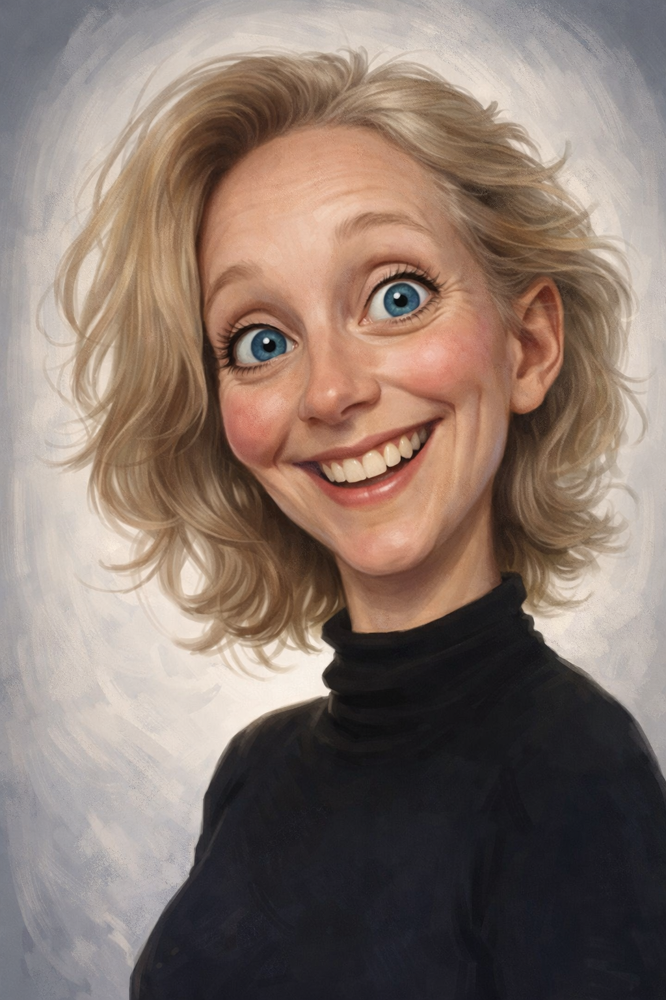
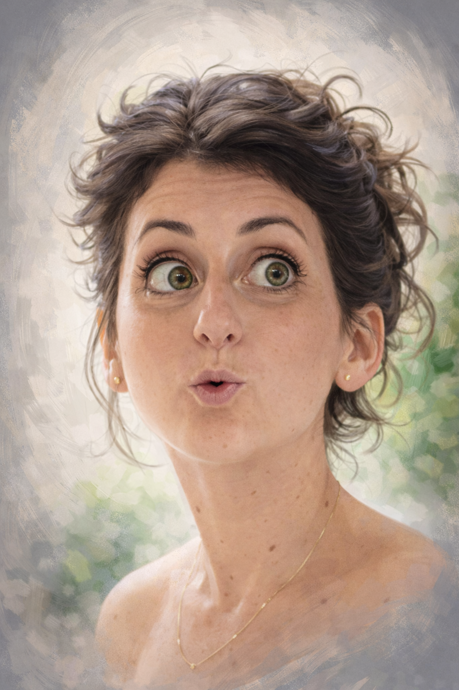
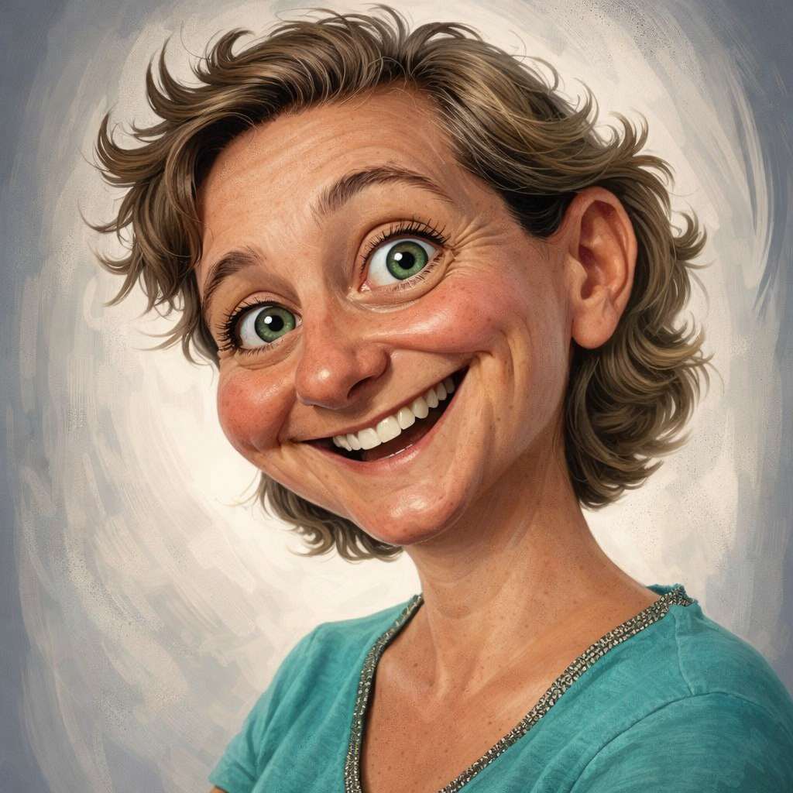
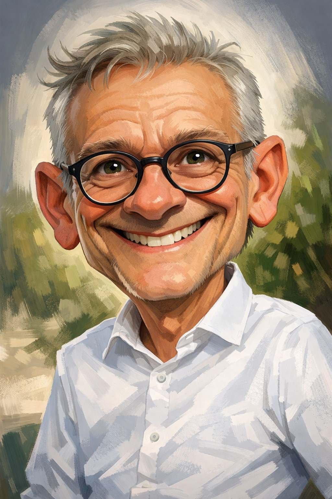

"Octobre 2025, séisme au SCCF. Le verdict tombe : un plan social et une
transformation de l'association !
La direction convoque une visio extraordinaire pour l’ensemble des
salarié·es de l’association.
Des rumeurs, des bruits de couloirs, des ragots laissent apercevoir un
moment inédit dans la vie de l’association."

Mélanie Cagniart
DRH du SC

Isabelle Lambret
DRH adjointe

Adélaïde Bertrand
Déléguée générale

Didier Duriez
Président
Le CSE
Négociateurs
Les salariées du SCCF se connectent au webinaire organisé par la gouvernance de l'association. À l'écran, 3 visages : Didier Duriez, Adélaïde Bertrand, Mélanie Cagnart.
Iels parlent réorganisation, transformation, agilité, sobriété pour terminer par un nombre de postes supprimés... 130 !!
C'est parti pour une démarche d'information consultation de 3 mois avec le CSE et de négociations avec les organisations syndicales représentatives (ASSO-Solidaire, CFDT, CFTC et CFE-CGC).
Le coup d'envoi des réunions est lancé avec le premier CSE extraordinaire. Les élu-es ont eu accès à la documentation monumentale de la démarche : 3 documents légaux qui vont rythmer leurs nuits.
Livre 1 (PSE)
168 PAGES
Livre 2 (Transformation)
143 PAGES
Livre 4 (Santé)
131 PAGES
Voilà les élu-es occupé-es pour un bon moment ! Elles arrivent en CSE avec de nombreuses questions. Adélaïde Bertrand reprend les éléments du webinaire pour détailler les raisons économiques du PSE.
S'en suive beaucoup de questions des élues qui ne semblent pas décidées à laisser couler la présentation sans précisions.
Consulter le PV complet sur ISIDOR
Ça va vite, très vite : suspense, rebondissements, stress. Le 22 octobre 2025, lancement des négociations en parallèle du CSE. Le défi est absurde :
3 MOIS POUR NÉGOCIER
UN PROJET PRÉPARÉ DEPUIS 2
ANS
Travailler sur le Livre 1 pendant que le CSE étudie le Livre 2. Premier combat : le calendrier. Comment demander une appropriation sérieuse dans ces délais ?
La direction estime qu'un PV n'est pas utile : elle utilise un PowerPoint (et oui ça existe encore) pour présenter les ordres du jour et un relevé de décisions rédigé de manière unilatérale.
Nouvelle rencontre des négociateur-ices. Les premières sessions étaient dédiées à la forme : calendrier, moyens, accès aux documents. Une réponse récurrente de la direction résonne dans la salle :
"ON ENTEND. ON PREND BONNE NOTE ET ON REVIENT VERS VOUS."
On a quand même réussi à aborder un sujet du Livre 1 sur les périmètres géographiques. Les questions se multiplient devant des explications parfois floues.
Négociations et CSE extraordinaire la même semaine : le suspense est total. On nous présente l'IAPR, un service de psychologues accessible 24h/24.
Le rebondissement ? Les élu·es apprennent que cette structure fait partie du groupe... OASYS !
Oui, celui-là même qui a préparé la transformation et le PSE avec notre direction !
Vient ensuite la séquence sur la coordination des régions présentée par Jean-Philippe Rouxel : suppression des postes de coordinateur-trices d'animation. Inquiétudes massives sur la surcharge de travail.
"Paroles, paroles, paroles, toujours des paroles..." (Réf. Dalida)
On termine l'année par un nouvel acronyme : le PIC (Point Information Conseil). Ce dispositif sous-traité est géré par Randstad / RiseSmart.
On nous présente un cabinet "d'artisans" dont :
Suite de la saison dans quelques semaines !